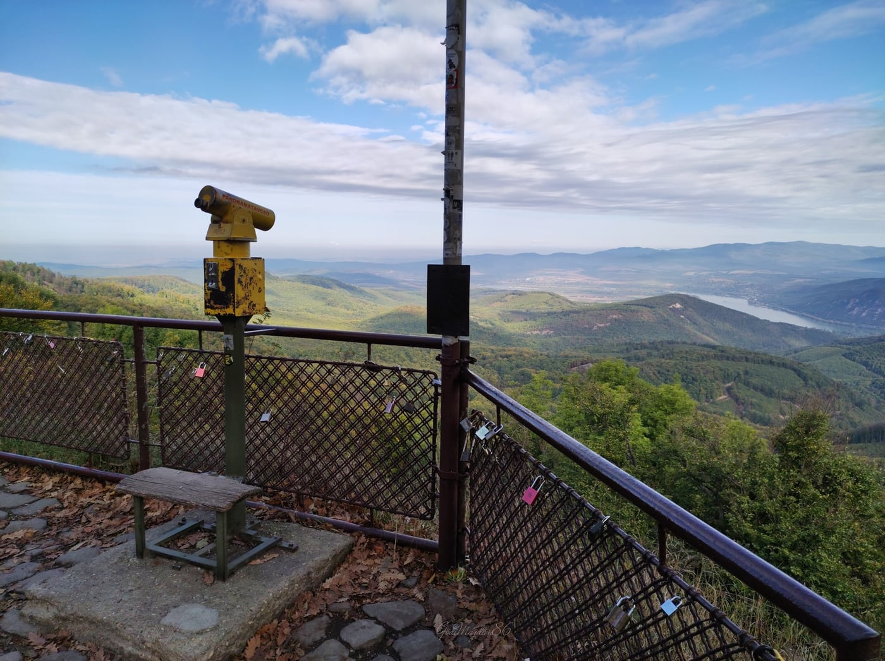
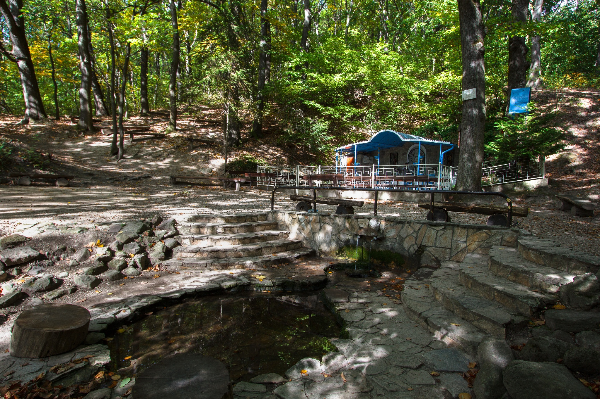
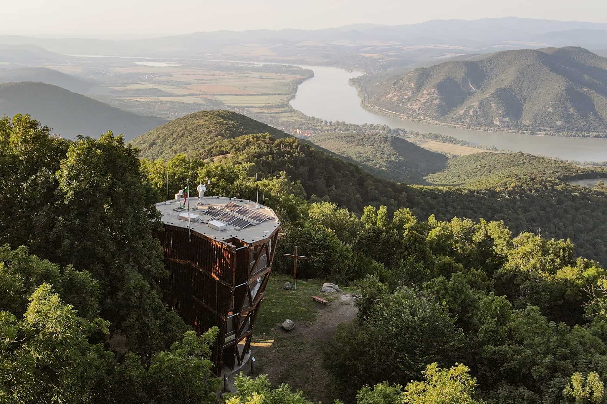

Dobogókő
A turistáskodás és síelés komoly múltra tekint vissza Dobogókőn. A 19. század végén a Magyar Turista Egyesület Thirring Gusztáv és Téry Ödön vezetésével elkezdte a turistautak kijelölését a környéken, mely a fővároshoz közeli fekvésének, a változatos erdei utaknak és a panorámának köszönhetően alkalmas kirándulóhely volt. Dobogó-kőn épült az ország egyik első turistaháza, a báró Eötvös Loránd menedékház, melyet Pfinn József tervei alapján 1898-ban adtak át. A faház mellett 1906-ban felépült a nagyobb kőépület. A trianoni békeszerződést követően, 1923-ban Dobogó-kőn hozták létre a mai Magyarország első sípályáját. Dobogókőn áthalad az Országos Kéktúra útvonala. A báró Eötvös Loránd menedékház faépületében ma a Turistamúzeum működik, a kőépület jelenleg is turistaház. Téry Ödönnek (1856-1917), a magyar turistamozgalom egyik kezdeményezőjének állít emléket a Téry-emlékmű (Christián Sándor műve, 1926). A sípályánál áll a Zsindelyes Vendégház, Makovecz Imre első, nemzetközi ismertséget hozó épülete. A siketek Szűz Mária-kegyhelye a kilátó alatt található.
Pilisszentkereszt
A település határában található a 11. századi királyi vadászkastély, amelyet III. Béla király az általa 1184. május 27-én alapított pilisi ciszterci apátságnak adott. Gerecze Péter kezdte meg a romok feltárását 1913-ban, majd az 1960-as – 1970-es években Gerevich László tárta fel az apátság maradványait teljes egészében. Ebben a monostorban temették el II. Endre király 1213. szeptember 28-án meggyilkolt feleségét, Gertrudis királynét. A tragédiát Katona József Bánk bán című drámájában dolgozta fel. A templom és a hozzá tartozó kolostor a tatárjárás és törökdúlás idején megsemmisült. A helység újratelepítése Mária Terézia idején kezdődött meg. Ekkor felvidéki szlovákok, és német telepesek érkeztek ide. A terület a pálosok tulajdona volt, akik a települést Szentkeresztnek nevezték el, amely az idők során a Pilis közelsége miatt Pilisszentkereszt lett. A ma is látható barokk stílusú templom a pálos atyák vezetésével 1766-ra épült fel, és a Szent Kereszt titulust kapta. 22 méter magas tornya csak 1803-ra készült el. 1945. január 9-én több, más irányból indított sikertelen kísérlet után a németek páncélosok támogatásával megkíséreltek a szovjet csapatok által körülzárt Budapestre bejutni Esztergom irányából Pilisszentlélek–Pilisszentkereszt–Pomáz irányában. 11-én véres harcok közben elfoglalták Pilisszentkeresztet és tovább nyomultak Pomáz felé, ahol végül is Hitler parancsa visszavonulásra utasította a támadókat. A páncélos ék a támadás leállításakor 17 kilométerre közelítette meg a fővárost. 2008-ban a képviselő-testület a szlovák kisebbségi önkormányzat irodájának elköltöztetéséről döntött a Szlovák Házból a szlovák iskola épületébe, ami diplomáciai vihart kavart Szlovákia és Magyarország között. Végül 2008 júniusában megállapodás született a Miniszterelnöki Hivatal és az Országos Szlovák Önkormányzat között Pilisi Szlovákok Központja felépítéséről, amely a magyar és a szlovák kormány támogatásával valósult meg, és 2012. október 2-án adták át Orbán Viktor és Robert Fico részvételével.
Pilisszentlászló
A terület régóta lakott: a faluban bronzkori és római kori emlékek is előkerültek. Egy legenda szerint Koppány vezér pogány híveit büntetésből telepítették le az akkor még Pilisnek nevezett hegységben; mások szerint lakói a honfoglalástól továbbélő szlávoktól származnak. Az Árpád-házi királyok vadászni jártak a közeli erdőkbe. III. Béla király vadászházat épített a jelenlegi templomdombon. Ezt III. András 1291-ben a pálosoknak ajándékozta, és ők kolostorrá építették át. A Kékes-hegy lejtőjén álló, Szent László tiszteletére felszentelt monostortól keletre alakult ki a hegyről akkor még Kékesnek nevezett falu. Gentilis bíboros, pápai követ 1308. november 10-én itt kötötte meg a helyről elnevezett kékesi megállapodást Csák Mátéval Károly Róbert királynak elismeréséről. Nagy Lajos és Mátyás király is gyakran időzött a kolostorban. A török hódoltság alatt elpusztult a kolostor. A török kiűzése (1686) után visszajöttek pálosok, és szlovák telepesekkel akik újjáépítették a falut, amit ekkortól hívnak Szentlászlónak. 1696-ban már biztosan lakott hely volt; lakosai alapvetően mezőgazdaságból és erdőművelésből éltek. A gabonát az erdőtől elhódított irtványföldeken vetették. 1947-ben a csehszlovák–magyar lakosságcsere részeként a lakosság harmadát, 400 főt áttelepítettek Szlovákiába. Utána a betelepülők gyorsan elmagyarosították a falut. A délnyugati külterületén található Bükkipuszta 1947 augusztus közepén brutális tömeggyilkosság helyszíne volt; a tettes öt tizenéves fiút ölt meg. Az áldozatok közül ketten az ottani Zbórai-birtokon laktak, hárman pedig a faluból jártak ki oda, hogy segítsenek a nyári mezőgazdasági munkákban; négyen a helyszínen elvéreztek, ötödik társuk kórházban halt meg. Nagyon valószínű, hogy ugyanez az elkövető a közelben (Pomáz külterületén) két másik gyilkosságot is elkövetett ugyanazokban a napokban. A tettes ismeretlen maradt. A korabeli propaganda azt sulykolta, hogy az elkövető volt német SS-katona lehetett, viszont a helyiek visszaemlékezései és közvetett adatok szerint valószínűbb, hogy egy volt szovjet katona lehetett — ezt a verziót erősíti az a tény is, hogy a hatóságok sosem adtak hírt az illető elfogásáról. 1993-ra épült ki a vezetékes víz- és a telefonhálózat. 1996–2002 között felújították és öltözővel látták el a focipályát. A mobiltelefonokhoz 2002 óta van térerő; az átjátszóállomást a templomtoronyban, környezetbarát módon rejtették el. 2003-ban nyílt meg a teleház és a szlovák közösségi ház.